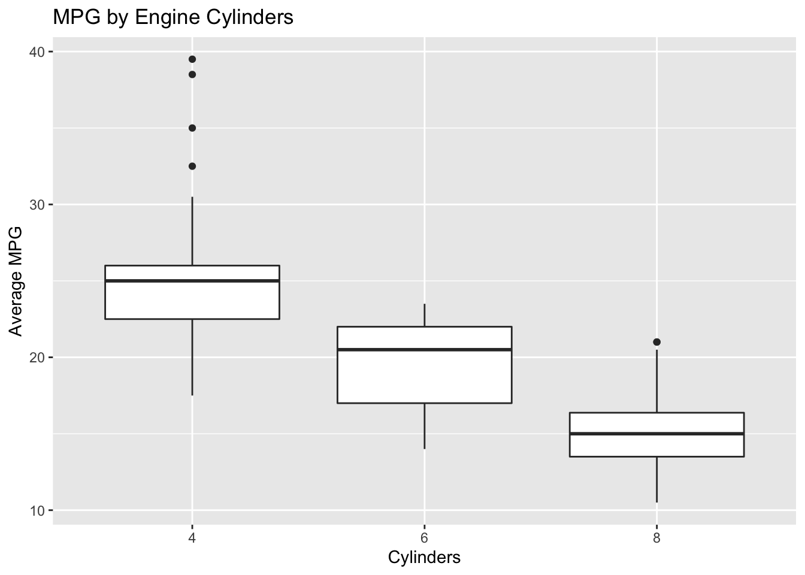
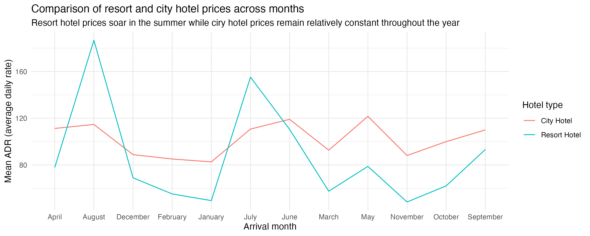

library(tidyverse)
library(scales)Data types and classes
STA 199
Bulletin
- this
aeis due for grade (48 hours from class). To turn in, simply push to GitHub - homework 01 due today at 5:00pm
Getting started
Clone your ae7-username repo from the GitHub organization.
Today
By the end of today you will…
- learn how to check the type of a variable
- utilize factors
Load packages
We will use the following two packages in this application exercise.
- tidyverse: For data import, wrangling, and visualization.
- scales: For better axis labels.
Notes
A type is how an object is stored in memory. In this course we’ll encounter the following types:
- numeric types:
- double: a real number stored in double-precision floating point format
- integer
- character strings
- logical (TRUE/FALSE)
- lists (a heterogeneous collection of the above)
NULL
Some objects have additional metadata associated with them, called a class. One popular example of a class is a factor. R stores categorical variables as factors.
Example factor
x = factor(c("Monday", "Friday", "Wednesday"))
str(x) # look at the structure of x Factor w/ 3 levels "Friday","Monday",..: 2 1 3attributes(x) # see metadata$levels
[1] "Friday" "Monday" "Wednesday"
$class
[1] "factor"levels(x) # look at levels of a factor[1] "Friday" "Monday" "Wednesday"The levels of a factor default to alphabetical order but you can change the order of the levels:
levels(x) = c("Monday", "Wednesday", "Friday")
levels(x)[1] "Monday" "Wednesday" "Friday" Type coercion
Demo: Determine the type of the following vector. And then, change the type to numeric.
x = c("1", "2", "3") typeof(x)[1] "character"as.numeric(x)[1] 1 2 3Demo: Once again, determine the type of the following vector. And then, change the type to numeric. What’s different than the previous exercise?
y = c("a", "b", "c") # add code hereDemo: Once again, determine the type of the following vector. And then, change the type to numeric. What’s different than the previous exercise?
z = c("1", "2", "three") # add code hereDemo: Suppose you conducted a survey where you asked people how many cars their household owns collectively. And the answers are as follows:
survey_results = tibble(cars = c(1, 2, "three"))
survey_results# A tibble: 3 × 1
cars
<chr>
1 1
2 2
3 threeThis is annoying because of that third survey taker types a character string instead of providing a numeric value. So now you need to update the cars variable to be numeric. You do the following
survey_results |>
mutate(cars = as.numeric(cars))Warning in mask$eval_all_mutate(quo): NAs introduced by coercion# A tibble: 3 × 1
cars
<dbl>
1 1
2 2
3 NANow you get a warning NAs introduced by coercion that happened while computing cars = as.numeric(cars) and the response from the third survey taker is now an NA (you lost their data). Fix your mutate() call to avoid this warning.
survey_results |>
mutate(cars = if_else(cars == "three", "3", cars),
cars = as.numeric(cars))# A tibble: 3 × 1
cars
<dbl>
1 1
2 2
3 3Exercise 1
First, guess the type of the vector. Then, check if you guessed right. I’ve done the first one for you, you’ll see that it’s helpful to check the type of each element of the vector first.
c(1, 1L, "C")
v1 = c(1, 1L, "C")
# to help you guess
typeof(1)[1] "double"typeof(1L)[1] "integer"typeof("C")[1] "character"# to check after you guess
typeof(v1)[1] "character"v2 = c(1L / 0, "A")- `c(1:3, 5)`v3 = c(1:3, 5)- `c(3, "3+")`v4 = c(3, "3+")- `c(NA, TRUE)`v5 = c(NA, TRUE)Useful coercion
Exercise 2
data(mpg)Recreate the plot below. Make sure axes and title labels are exactly matching, including spelling, capitalization, etc.
Hint
You will need to use as.factor() to cast the appropriate variable as a factor.

# code hereHotel bookings
# From TidyTuesday: https://github.com/rfordatascience/tidytuesday/blob/master/data/2020/2020-02-11/readme.md
hotels = read_csv("https://raw.githubusercontent.com/rfordatascience/tidytuesday/master/data/2020/2020-02-11/hotels.csv")Exercise 3
Take a look at the the following visualization. How are the months ordered? What would be a better order?

Reorder the months on the x-axis (levels of arrival_date_month) in a way that makes more sense. Use the factor() function to mutate the column into a factor. Read ?factor for help.
hotels |>
group_by(hotel, arrival_date_month) |> # group by hotel type and arrival month
summarise(mean_adr = mean(adr), .groups = "drop") |> # calculate mean adr for each group
ggplot(aes(
x = arrival_date_month, # x-axis = arrival_date_month
y = mean_adr, # y-axis = mean_adr calculated above
group = hotel, # group lines by hotel type
color = hotel) # and color by hotel type
) +
geom_line() + # use lines to represent data
theme_minimal() + # use a minimal theme
labs(
x = "Arrival month", # customize labels
y = "Mean ADR (average daily rate)",
title = "Comparison of resort and city hotel prices across months",
subtitle = "Resort hotel prices soar in the summer while ciry hotel prices remain relatively constant throughout the year",
color = "Hotel type"
) Optional extra: Change the y-axis label so the values are shown with dollar signs, e.g. $80 instead of 80. You will want to use a function from the scales package, see https://scales.r-lib.org/reference/index.html for inspiration and help.